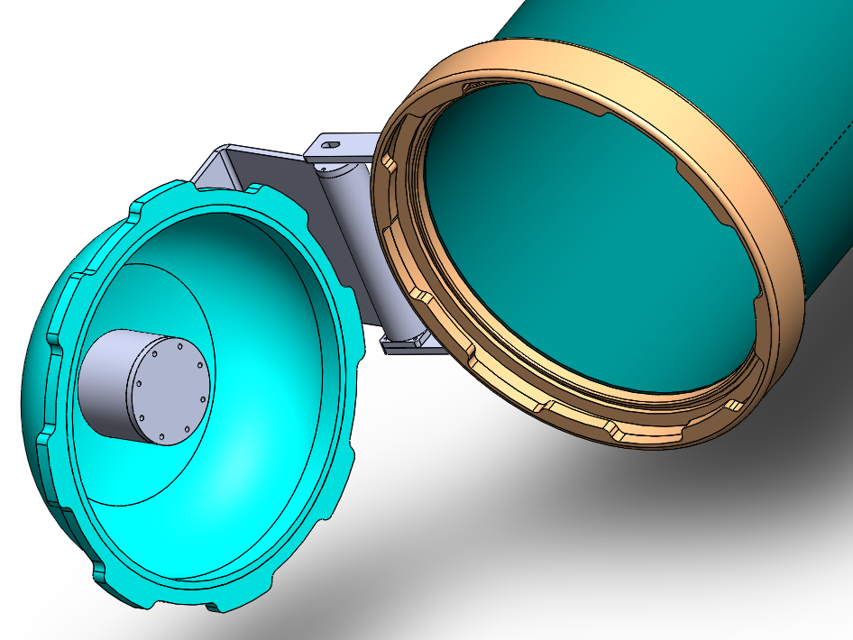
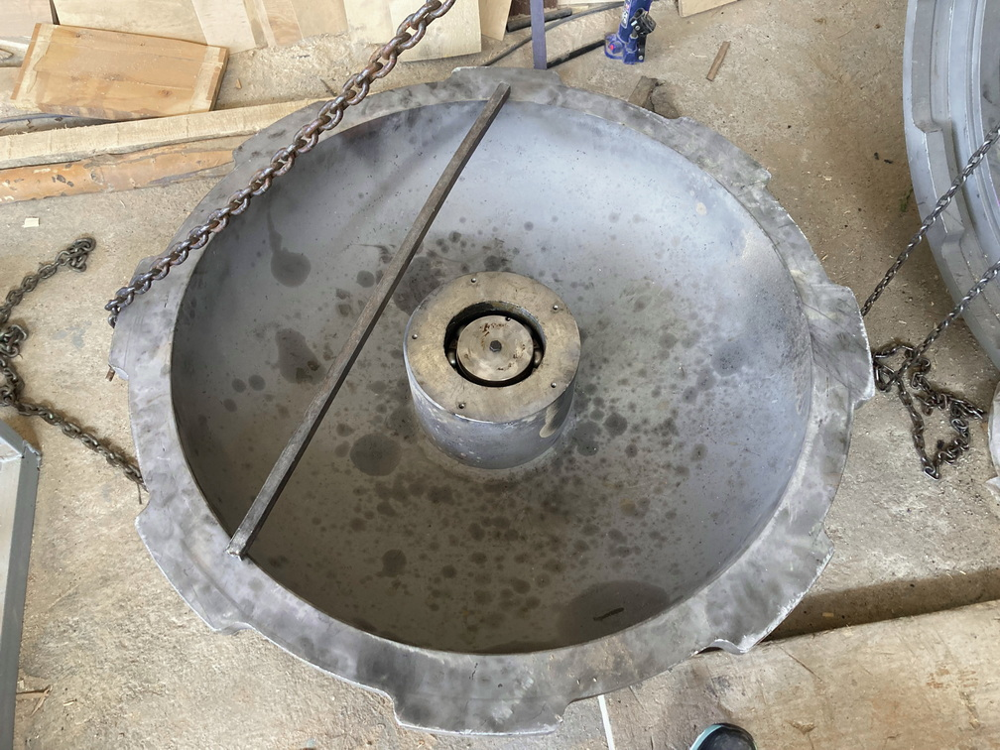
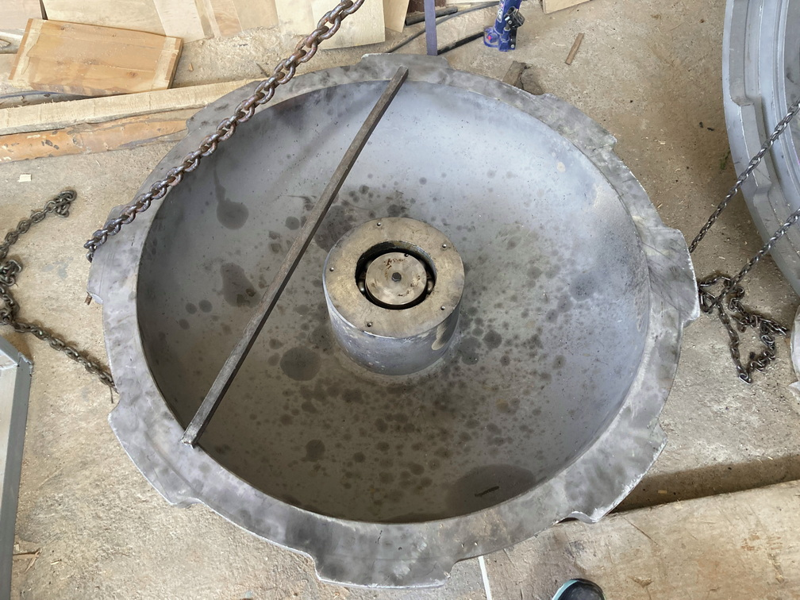

Timber treatment autoclave
In this project, I was responsible for designing and also automation. I, as a project manager, gave the blueprints to laser cut, roller, and welder. Then I managed to automate the proccess, from zero to hundred, such as building and designing the electricity panel, wiring and cabling, and at the end PLC programming.
Project description
-

1.Design
The first step of the building procedure, is mechanical design which has been done with Solidworks software.
-

2.Waterjet cut
Next step is to cut the 20mm iron sheet by waterjet CNC cutting machines. Main body, Lenses and parts has been produced by this 20mm sheet. But door structure has been made out of 60mm thickness bar.
-

3.Heavy Lathing and pressing
Shafts and door base has been made using heavy lathing machine. It's been using a silicone washer to stay sealed in 15 bars of pressure. Lenses has been pressed with 40" standard hot forming.
-

4.Heavy Rolling and bending
Cut pieces has been rolled and welded together as the main body. Then welded bodies has been over-rolled again to maximize linearity and of the autoclave.
-
3D Models

Assembly and welding
After degreasing, cleaning and welding seperated parts, next step is to connect pieces together. It has been done according to the blueprints using solidwork software. Main tank has to be assempled in a certain order:
-
1.Welding first lense and door frame to the body
Formed lense and female rolled lathed door frame has been welded to the both sides of the 6 meter body.
-
2.Welding second lense to the door
Second lense has been attached to the male frame of the door. Waterjet cut and lathing is again nessecary to centrize the lense and frame.
-
3.Legs
Three legs of the machine, has been welded to the body. Some inlet and outlet flanges has been installed on the main body for facilities.
-
4.Door
Door hinge has been welded to the main body, and attached to the door lense. 4 heavy duty ballbearings has been installed in this structure to maximize repairment and maintenance periods. Pneumatic valve has been used to open and close the door during the process.
-
5.Pumps
A vacuum pump, a high pressure pump and a draining pump has been installed in order to controll the pressure and flow of the process. 4 pneumatic valves has been used due to safety and controlling necessities.
Electricity and automation
Electricity system of this machine has been designed by me using pneumatic valves, Pressure switches, sensors and PLC.
-
Pnuematic valves and jack
4 valves and one linear jack have been used in this machine for purposes such as dosing, filling, draining and vacuuming.
-
Inductive sensor

This sensor has been used for safety reasons in order to assurance of door situation (If it's fully closed or not) before applying pressure to the autoclave.
-
Pressure switches
4 pressur switches has been used in this machine. One of the controls the vaccuum pressure during vaccuum process. Another one controls the high pressure step. Other two has been used for safety reasons.
-
Flow switch
2 flow switches has been used to control the flow and prevent pumps from dry-working. It also gave us a feedback when the tanks are empty or the autoclave draining has been finished.
-
PLC
The PLC controlled system, gave us the oportunity of doing the process fully automated. Human errors minimized and time efficiency increased. The other point is after loading the machine, there is no need of human resource for the process.
Gallery
 
